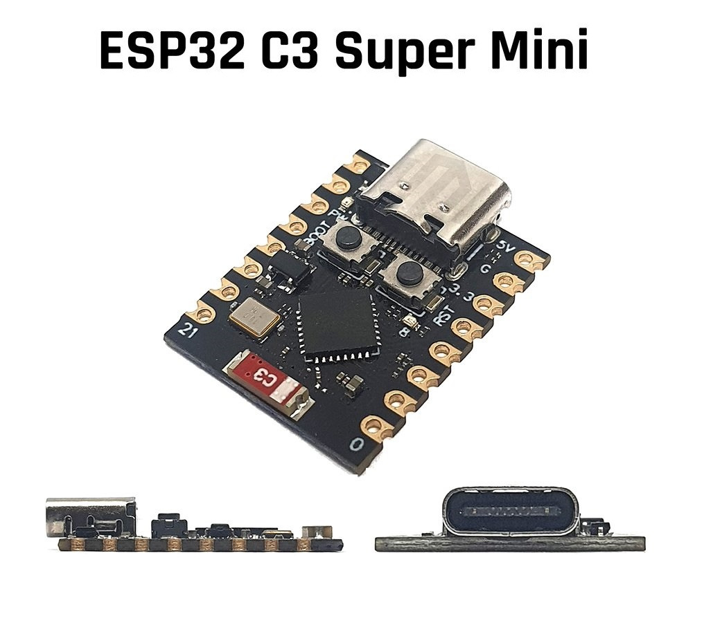

Hardware y software
Materiales y código
Qué se necesita
| Elemento | Detalle | Costo aprox. |
|---|---|---|
| Placa | ESP32-C3 Super Mini | $300 UYU |
| Cable | USB-C | — |
| Software | Thonny + MicroPython para ESP32-C3 | Gratuito |
| Red | Aula o laboratorio controlado | — |

Instalación paso a paso
1 Preparar el entorno
- Instalar Thonny.
- Descargar firmware MicroPython para ESP32-C3 desde micropython.org.
- Conectar la placa y ponerla en modo boot.
- Flashear el firmware con Thonny.
2 Cargar el código
Abrir el archivo ESP32-CIBERSEGURIDAD-MALWARE.py en Thonny y ajustar al inicio:
NODE_ROLE = 'master' # 'master' o 'slave' MASTER_ALSO_AP = True CHANNEL = 6 SSID_BASE = "DGES_Red_Docentes"
Guardar como main.py en la placa y reiniciar.
3 Verificar
En el monitor serial debería aparecer:
AP educativo activo en 192.168.4.1 SSID: DGES_Red_Docentes Admin: http://192.168.4.1/admin
4 Probar
Conectar un celular a la red, completar el login de demostración y observar la secuencia completa. Abrir el panel admin desde otro dispositivo de la misma red.
Código completo
Ver código fuente completo
import network
import espnow
import socket
import select
import time
import errno
import ubinascii
# ========== CONFIGURACIÓN DE ROL ==========
NODE_ROLE = 'master' # 'master' o 'slave'
MASTER_ALSO_AP = True # Si es master y también ofrece AP a alumnos (solo para master)
CHANNEL = 6 # Mismo canal para todos
SSID_BASE = "DGES_Red_Docentes"
AP_IP = "192.168.4.1"
MAX_CLIENTS = 10
def get_unique_ssid():
"""Genera un SSID único basado en los últimos 4 caracteres de la MAC"""
sta_mac = network.WLAN(network.STA_IF).config('mac')
mac_suffix = ubinascii.hexlify(sta_mac).decode()[-4:]
return f"{SSID_BASE}_{mac_suffix}"
# ----- Configurar el punto de acceso según el rol -----
ap = network.WLAN(network.AP_IF)
ap.active(True)
if NODE_ROLE == 'master' and not MASTER_ALSO_AP:
ap.config(essid="Admin_DGES", authmode=0, max_clients=1, channel=CHANNEL)
else:
if NODE_ROLE == 'master':
ssid = SSID_BASE
else: # slave
ssid = get_unique_ssid()
ap.config(essid=ssid, authmode=0, max_clients=MAX_CLIENTS, channel=CHANNEL)
ap.ifconfig((AP_IP, '255.255.255.0', AP_IP, AP_IP))
# ----- Inicializar ESP-NOW -----
sta = network.WLAN(network.STA_IF)
sta.active(True)
sta.disconnect()
e = espnow.ESPNow()
e.active(True)
e.add_peer(b'\xff\xff\xff\xff\xff\xff') # Broadcast
own_mac = ubinascii.hexlify(sta.config('mac')).decode()
# ----- Variables globales -----
contador = 0
registro_caidas = []
# ========== FUNCIONES DEL PORTAL ==========
def http_redirect(location="/"):
return f"HTTP/1.1 302 Found\r\nLocation: {location}\r\nConnection: close\r\n\r\n"
def html_portal():
return """HTTP/1.1 200 OK\r\nContent-Type: text/html\r\nConnection: close\r\n\r\n
<!DOCTYPE html><html><head><meta charset="utf-8"><meta name="viewport" content="width=device-width, initial-scale=1.0">
<title>Portal Administrativo Docente</title>
<style>body{font-family:Arial,sans-serif;background:#f0f2f5;margin:0;padding:20px;color:#333;}
.header{background:#004b87;color:#fff;padding:15px;text-align:center;border-radius:5px;margin-bottom:20px;}
.header h2{margin:0;font-size:22px;}
.aviso{background:#fff3cd;border-left:5px solid #ffc107;padding:10px;margin-bottom:20px;color:#856404;font-size:14px;}
.grid{display:flex;flex-wrap:wrap;gap:15px;justify-content:center;}
.card{background:#fff;border-radius:8px;box-shadow:0 2px 6px rgba(0,0,0,0.1);width:140px;padding:20px;text-align:center;text-decoration:none;color:#004b87;font-weight:bold;transition:transform 0.2s;}
.card:hover{transform:scale(1.05);box-shadow:0 4px 12px rgba(0,0,0,0.2);}
.card div{font-size:40px;margin-bottom:10px;}
.footer{text-align:center;font-size:12px;color:#999;margin-top:30px;}
</style></head><body>
<div class="header"><h2>📋 Portal Administrativo</h2><p>Sistema interno para personal docente</p></div>
<div class="aviso">⚠️ Acceso restringido. Si eres alumno, esta área no es para ti.</div>
<div class="grid">
<a href="/login?seccion=notas" class="card"><div>📊</div>Ver Notas</a>
<a href="/login?seccion=comunicados" class="card"><div>📢</div>Comunicados</a>
<a href="/login?seccion=calendario" class="card"><div>📅</div>Calendario Exámenes</a>
<a href="/login?seccion=asistencia" class="card"><div>✅</div>Asistencia</a>
</div>
<div class="footer">Sistema de Gestión Centralizada v2.4 · DGES</div>
</body></html>"""
def html_login(seccion="desconocida"):
titulos = {"notas":"Acceso a Notas del Grupo","comunicados":"Comunicados Internos","calendario":"Calendario de Exámenes","asistencia":"Registro de Asistencia"}
titulo = titulos.get(seccion, "Portal Administrativo")
return f"""HTTP/1.1 200 OK\r\nContent-Type: text/html\r\nConnection: close\r\n\r\n
<!DOCTYPE html><html><head><meta charset="utf-8"><meta name="viewport" content="width=device-width, initial-scale=1.0">
<title>{titulo}</title>
<style>body{{font-family:Arial,sans-serif;text-align:center;background:#eef2f5;margin-top:40px;color:#333;}}
.c{{background:#fff;padding:30px;border-radius:5px;border-top:5px solid #004b87;box-shadow:0 4px 8px rgba(0,0,0,0.1);display:inline-block;width:85%;max-width:320px;}}
h2{{color:#004b87;font-size:20px;margin-bottom:5px;}}
p{{font-size:14px;color:#666;margin-bottom:20px;}}
input{{width:90%;padding:10px;margin:10px 0;border:1px solid #ccc;border-radius:3px;box-sizing:border-box;}}
button{{background:#004b87;color:#fff;border:none;padding:12px;border-radius:3px;font-size:16px;width:100%;font-weight:bold;cursor:pointer;}}
.footer{{font-size:11px;color:#999;margin-top:20px;}}
.help{{background:#e3f2fd;border-left:4px solid #2196F3;padding:10px;margin-top:15px;font-size:12px;color:#1565c0;border-radius:3px;}}
.help strong{{display:block;margin-bottom:5px;}}
.help code{{background:#fff;padding:2px 6px;border-radius:2px;color:#000;font-weight:bold;}}
</style></head><body><div class="c"><h2>{titulo}</h2><p>Para ver esta información, ingrese sus credenciales institucionales.</p>
<form action="/susto" method="POST">
<input type="text" name="user" placeholder="Cédula de Identidad" required>
<input type="password" name="pass" placeholder="Contraseña asignada" required>
<button type="submit">VALIDAR ACCESO</button>
</form>
<div class="help"><strong>¿Olvidaste tu contraseña?</strong>Usa temporalmente: <code>12345678</code></div>
<div class="footer">Recuerde: si es alumno, no tiene acceso permitido.</div></div></body></html>"""
def html_susto():
return """HTTP/1.1 200 OK\r\nContent-Type: text/html\r\nConnection: close\r\n\r\n
<!DOCTYPE html><html><head><meta charset="utf-8"><meta name="viewport" content="width=device-width, initial-scale=1.0">
<meta http-equiv="refresh" content="5;url=/malware">
<style>body{font-family:Arial;text-align:center;background:#d32f2f;color:#fff;margin-top:50px;}
h1{font-size:40px;}p{font-size:20px;}</style></head>
<body><h1>🎣 ¡CAÍSTE!</h1><p>Acabás de ser víctima de una simulación de <b>Phishing</b>.</p>
<p>Tus datos no se guardaron, esto es solo una demostración educativa.</p>
<p>Serás redirigido a una demostración de <b>Malware</b> en 5 segundos...</p>
<p><b>Prestá atención al profe.</b></p></body></html>"""
def html_malware():
return """HTTP/1.1 200 OK\r\nContent-Type: text/html\r\nConnection: close\r\n\r\n
<!DOCTYPE html><html><head><meta charset="utf-8"><meta name="viewport" content="width=device-width, initial-scale=1.0">
<title>RANSOMWARE ACTIVO</title>
<style>
body{font-family:monospace;background:#000;color:#0f0;text-align:center;padding-top:20px;margin:0;}
.blink{animation:blink 0.5s infinite;}
@keyframes blink{50%{opacity:0;}}
.big{font-size:3em;color:#f00;margin:10px 0;}
.warning{font-size:20px;margin:10px 0;}
h1{text-shadow:0 0 20px #f00;margin:5px 0;}
.files{text-align:left;margin:20px auto;background:#111;padding:20px;max-width:500px;border:2px solid #f00;height:200px;overflow-y:auto;}
.file{margin:5px 0;color:#f66;}
.info{font-size:12px;color:#666;margin-top:30px;}
.progress{width:80%;height:20px;background:#333;margin:10px auto;border:1px solid #0f0;}
.progress-bar{width:0%;height:100%;background:#f00;transition:width 0.1s;}
.hidden{display:none;}
.ransom{background:#111;border:2px solid #f00;padding:20px;margin:20px auto;max-width:400px;color:#fff;font-size:16px;}
.ransom p{margin:10px 0;}
.ransom .cuenta{font-size:24px;color:#ff0;font-weight:bold;background:#000;padding:5px;letter-spacing:2px;}
</style></head>
<body>
<div class="blink"><h1>⚠️ MALWARE ACTIVO ⚠️</h1></div>
<p class="big">💀 RANSOMWARE 💀</p>
<p class="warning">Cifrando archivos del dispositivo...</p>
<div class="progress"><div id="progressBar" class="progress-bar"></div></div>
<p id="progressText">0% completado</p>
<div class="files" id="fileList"></div>
<div id="ransomNote" class="ransom hidden">
<p style="color:#f66;font-size:18px;"><b>🔒 TUS ARCHIVOS ESTÁN SECUESTRADOS</b></p>
<p>Para recuperarlos, debes pagar:</p>
<p style="font-size:28px;color:#ff0;font-weight:bold;">$ 1.000</p>
<p>Depositar en la cuenta del <b>Profe</b>:</p>
<p class="cuenta" id="cuentaAleatoria"></p>
<p>Banco: <b>Banco Central de la Clase</b></p>
<p style="color:#666;font-size:12px;">(Simulación educativa – no se ha instalado nada)</p>
</div>
<div class="info" id="countdown">Serás redirigido a la lección en <span id="seconds">25</span> segundos...</div>
<script>
const files = [
"Trabajo_Final_Historia.docx",
"Fotos_Egresados_2024.zip",
"Boletines_Calificaciones.pdf",
"Base_Datos_Escolar.db",
"Videos_Excursion.mp4",
"Contraseñas_WiFi.txt",
"Proyecto_Ciencias.ppt",
"Claves_Banco.xlsx",
"Música_Spotify.mp3",
"Tesis_Programacion.py"
];
const fileList = document.getElementById('fileList');
const progressBar = document.getElementById('progressBar');
const progressText = document.getElementById('progressText');
const ransomNote = document.getElementById('ransomNote');
const secondsSpan = document.getElementById('seconds');
const cuentaSpan = document.getElementById('cuentaAleatoria');
const cuentaRandom = Math.floor(Math.random() * 9000000000) + 1000000000;
cuentaSpan.textContent = cuentaRandom;
let processed = 0;
const totalFiles = files.length;
function encryptNext() {
if (processed < totalFiles) {
const fileDiv = document.createElement('div');
fileDiv.className = 'file';
fileDiv.innerHTML = `[CIFRADO] ${files[processed]}`;
fileList.appendChild(fileDiv);
processed++;
const percent = Math.round((processed / totalFiles) * 100);
progressBar.style.width = percent + '%';
progressText.textContent = percent + '% completado';
const delay = Math.floor(Math.random() * 350) + 150;
setTimeout(encryptNext, delay);
} else {
setTimeout(() => {
ransomNote.classList.remove('hidden');
let secondsLeft = 25;
const countdownInterval = setInterval(() => {
secondsLeft--;
secondsSpan.textContent = secondsLeft;
if (secondsLeft <= 0) {
clearInterval(countdownInterval);
window.location.href = '/leccion';
}
}, 1000);
}, 1000);
}
}
encryptNext();
</script>
</body></html>"""
def html_leccion():
return """HTTP/1.1 200 OK\r\nContent-Type: text/html\r\nConnection: close\r\n\r\n
<!DOCTYPE html><html><head><meta charset="utf-8"><meta name="viewport" content="width=device-width, initial-scale=1.0">
<style>body{font-family:Arial;background:#f0f0f0;padding:20px;color:#333;}
.container{max-width:600px;margin:0 auto;background:#fff;padding:30px;border-radius:8px;box-shadow:0 2px 10px rgba(0,0,0,0.1);}
h1{color:#d32f2f;text-align:center;}
.lesson{background:#fff3cd;border-left:5px solid #ffc107;padding:15px;margin:15px 0;border-radius:4px;}
.lesson h3{margin-top:0;color:#856404;}
.lesson p{margin:8px 0;}
.footer{text-align:center;margin-top:30px;padding-top:20px;border-top:1px solid #ddd;font-size:12px;color:#666;}
</style></head><body>
<div class="container">
<h1>📘 LECCIÓN: Ciberseguridad Digital</h1>
<div class="lesson"><h3>1. Phishing – Ataque Social</h3><p>El phishing es la técnica más efectiva de los hackers. No usan tecnología compleja, sino <b>PSICOLOGÍA</b>.</p><p>Te pedimos tu contraseña de una forma que parecía oficial. Casi todos caen.</p></div>
<div class="lesson"><h3>2. Ransomware – Secuestro de datos</h3><p>Después del phishing, los atacantes instalan malware que cifra tus archivos.</p><p>Piden dinero a cambio de la clave de descifrado. Es criminal.</p></div>
<div class="lesson"><h3>3. Cómo protegerse</h3><p>✓ Verifica SIEMPRE la URL exacta (no confíes en lo que parece oficial)</p><p>✓ Las empresas NUNCA piden contraseña por formularios web</p><p>✓ WiFi pública = PELIGRO máximo</p><p>✓ No abras archivos de desconocidos</p><p>✓ Actualiza tu software siempre</p></div>
<div class="lesson"><h3>4. Lo que capturamos</h3><p>En un ataque real, hubiéramos obtenido:</p><p>✓ Tu número de cédula</p><p>✓ Tu contraseña</p><p>✓ Tu dispositivo y sistema operativo</p><p>✓ Tu ubicación</p><p>✓ Toda tu información personal</p></div>
<div class="footer">Recuerda: La seguridad digital es tu responsabilidad<br>Comparte este conocimiento con tu familia</div>
</div></body></html>"""
def html_admin(contador, registros):
items = ""
for item in registros:
if len(item) == 4:
hora, modelo, ua, mac = item
ua_short = ua[:60] + ("..." if len(ua) > 60 else "")
items += f"<li><strong>{modelo}</strong> ({mac})<br><small>{hora} - {ua_short}</small></li>"
else:
hora, modelo, ua = item
ua_short = ua[:60] + ("..." if len(ua) > 60 else "")
items += f"<li><strong>{modelo}</strong><br><small>{hora} - {ua_short}</small></li>"
if not items:
items = "<li style='color:#666;'>Ningún dispositivo ha caído aún.</li>"
return f"""HTTP/1.1 200 OK\r\nContent-Type: text/html\r\nConnection: close\r\n\r\n
<!DOCTYPE html><html><head><meta charset="utf-8"><meta http-equiv="refresh" content="3">
<style>body{{font-family:monospace;background:#111;color:#0f0;text-align:center;margin-top:40px;}}
h1{{font-size:40px;color:#fff;}}.num{{font-size:120px;font-weight:bold;color:#f00;margin:10px;text-shadow:0 0 20px #f00;}}
.alerta{{font-size:20px;animation:parpadeo 1s infinite;margin-bottom:30px;}}
ul{{list-style-type:none;padding:0;font-size:16px;color:#aaa;max-width:500px;margin:0 auto;text-align:left;}}
li{{background:#222;margin:5px 0;padding:10px;border-left:4px solid #f00;}}
@keyframes parpadeo{{50%{{opacity:0;}}}}</style></head>
<body><h1>👨🏫 ALUMNOS COMPROMETIDOS</h1><div class="num">{contador}</div>
<p class="alerta">Monitoreo de huella digital en la red...</p>
<ul>{items}</ul></body></html>"""
# ========== DNS FALSO (no bloqueante) ==========
dns_sock = socket.socket(socket.AF_INET, socket.SOCK_DGRAM)
dns_sock.bind(('0.0.0.0', 53))
dns_sock.setblocking(False)
def responder_dns():
try:
data, addr = dns_sock.recvfrom(1024)
transaction_id = data[:2]
respuesta = transaction_id + b'\x81\x80' + data[4:6] + data[4:6] + b'\x00\x00\x00\x00'
pregunta = data[12:]
fin_pregunta = pregunta.find(b'\x00', 5) + 5
respuesta += pregunta[:fin_pregunta]
ip_bytes = bytes(map(int, AP_IP.split('.')))
respuesta += b'\xc0\x0c\x00\x01\x00\x01\x00\x00\x00\x3c\x00\x04' + ip_bytes
dns_sock.sendto(respuesta, addr)
except OSError as e:
if e.args[0] not in (errno.EAGAIN, errno.EWOULDBLOCK):
print("[DNS error]", e)
except Exception as e:
print("[DNS error]", e)
# ========== SERVIDOR WEB (no bloqueante) ==========
web_sock = socket.socket(socket.AF_INET, socket.SOCK_STREAM)
web_sock.setsockopt(socket.SOL_SOCKET, socket.SO_REUSEADDR, 1)
web_sock.bind(('0.0.0.0', 80))
web_sock.listen(5)
web_sock.setblocking(False)
print("🧑🏫 AP educativo activo en", AP_IP)
print("SSID:", ssid)
if NODE_ROLE == 'master':
print("📊 Admin: http://" + AP_IP + "/admin")
else:
print("📡 Esclavo listo. Los eventos se enviarán al maestro.")
# ========== BUCLE PRINCIPAL CON select() ==========
while True:
# Monitorear sockets de web y DNS
readers = [web_sock, dns_sock]
try:
rlist, _, _ = select.select(readers, [], [], 0.1)
except Exception as e:
print("[Select error]", e)
continue
# Procesar DNS
if dns_sock in rlist:
responder_dns()
# Procesar conexiones web
if web_sock in rlist:
try:
conn, addr = web_sock.accept()
conn.settimeout(2.0) # timeout para evitar bloqueos largos
try:
req = conn.recv(2048).decode('utf-8', 'ignore')
except Exception:
conn.close()
continue
# Captive Portal Detection
if any(path in req for path in ["/generate_204", "/hotspot-detect.html", "/ncsi.txt", "/connecttest.txt"]):
conn.sendall(http_redirect("/").encode('utf-8'))
elif "POST /susto" in req:
ahora = time.localtime()
hora_str = "{:02d}:{:02d}:{:02d}".format(ahora[3], ahora[4], ahora[5])
modelo = "Dispositivo desconocido"
ua_completo = ""
for linea in req.split('\r\n'):
if "User-Agent:" in linea:
ua_completo = linea.split(":", 1)[1].strip()
ua_lower = ua_completo.lower()
if "iphone" in ua_lower: modelo = "Apple iPhone"
elif "ipad" in ua_lower: modelo = "Apple iPad"
elif "android" in ua_lower: modelo = "Teléfono Android"
elif "mac os" in ua_lower or "macintosh" in ua_lower: modelo = "Apple Mac"
elif "windows" in ua_lower: modelo = "PC Windows"
elif "linux" in ua_lower: modelo = "Linux"
break
# Actualizar contador local si es master y también AP
if NODE_ROLE == 'master' and MASTER_ALSO_AP:
contador += 1
registro_caidas.insert(0, (hora_str, modelo, ua_completo[:60] + ("..." if len(ua_completo)>60 else ""), own_mac[:6]))
if len(registro_caidas) > 20:
registro_caidas.pop()
# Enviar evento por ESP-NOW
msg = f"CAYO|{modelo}|{ua_completo[:60]}|{time.time()}"
e.send(b'\xff\xff\xff\xff\xff\xff', msg.encode())
print("[PHISHING] " + modelo + " - " + addr[0])
conn.sendall(html_susto().encode('utf-8'))
elif "GET /admin" in req:
if NODE_ROLE == 'master':
print("[ADMIN] Acceso")
conn.sendall(html_admin(contador, registro_caidas).encode('utf-8'))
else:
conn.sendall(http_redirect("/").encode('utf-8'))
elif "GET /malware" in req:
conn.sendall(html_malware().encode('utf-8'))
elif "GET /leccion" in req:
conn.sendall(html_leccion().encode('utf-8'))
elif "GET /login" in req:
seccion = "desconocida"
if "seccion=" in req:
try:
seccion = req.split("seccion=")[1].split(" ")[0].split("&")[0]
except:
pass
conn.sendall(html_login(seccion).encode('utf-8'))
else:
conn.sendall(html_portal().encode('utf-8'))
conn.close()
except OSError as e:
# Errores comunes en non-blocking accept
if e.args[0] not in (errno.EAGAIN, errno.EWOULDBLOCK, errno.ECONNRESET, errno.ENOTCONN):
print("[Web error]", e)
except Exception as e:
print("[Web error]", e)
# Recibir mensajes ESP-NOW (no bloqueante)
try:
host, msg = e.recv(0)
if msg and NODE_ROLE == 'master':
mac_origen = ubinascii.hexlify(host).decode()
if mac_origen != own_mac:
msg_str = msg.decode()
if msg_str.startswith("CAYO|"):
partes = msg_str.split('|')
modelo = partes[1] if len(partes) > 1 else "Desconocido"
ua = partes[2] if len(partes) > 2 else ""
ahora = time.localtime()
hora_str = "{:02d}:{:02d}:{:02d}".format(ahora[3], ahora[4], ahora[5])
contador += 1
registro_caidas.insert(0, (hora_str, modelo, ua, mac_origen[:6]))
if len(registro_caidas) > 20:
registro_caidas.pop()
print("[ESP-NOW] Caída desde", mac_origen)
except Exception as e:
# ESP-NOW recv devuelve None cuando no hay datos, no lanza excepción normalmente
pass